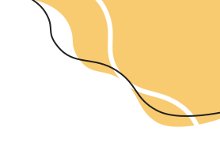

<style>
  .body {
    background: #FAF7F2;
  }

  .title {
    position: absolute;
    width: 115px;
    height: 54px;
    left: 38px;
    top: 77px;

    font-family: Poppins;
    font-style: normal;
    font-weight: 600;
    font-size: 36px;
    line-height: 54px;

    color: #202020;
  }

  .profile-blob {
    position: fixed;
    top: 0em;
    right: 0em;
  }

  .profile-list {
    position: absolute;
    width: 322px;
    height: 255px;
    left: 35px;
    top: 204px;
  }

  .selection {
   
  }
  .icon {
    position: relative;
    top: 15px;
    width: 30px;
    height: 30px;
  }
</style>

<ion-content fullscreen>
  <h3 class="title">Profile</h3>
  <div class="profile-blob">
    
  </div>

  <ion-list class="profile-list">
    <ion-item lines="none" class="selection" routerLink="/tabs/profile/cooking-skills">
      <ion-thumbnail slot = "start">
        
      </ion-thumbnail>
      
      <!-- figure out how to route to new pages -->
      <ion-label>Cooking Skill Level</ion-label>
      
    </ion-item>
    <ion-item lines="none" class="selection" routerLink="/tabs/profile/dietary-restrictions">
      <ion-thumbnail slot = "start">
        
      </ion-thumbnail>
      <ion-label>Dietary Restrictions</ion-label>
    </ion-item>
    <ion-item lines="none" class="selection" routerLink="/tabs/profile/kitchen-tools">
      <ion-thumbnail slot = "start">
        
      </ion-thumbnail>
      <ion-label>Kitchen Appliances/Tools</ion-label>
    </ion-item>
    <ion-item lines="none" class="selection" routerLink="/tabs/profile/liked-recipes">
      <ion-thumbnail slot = "start">
        
      </ion-thumbnail>
      <ion-label>Liked Recipes</ion-label>
    </ion-item>
  </ion-list>
</ion-content>